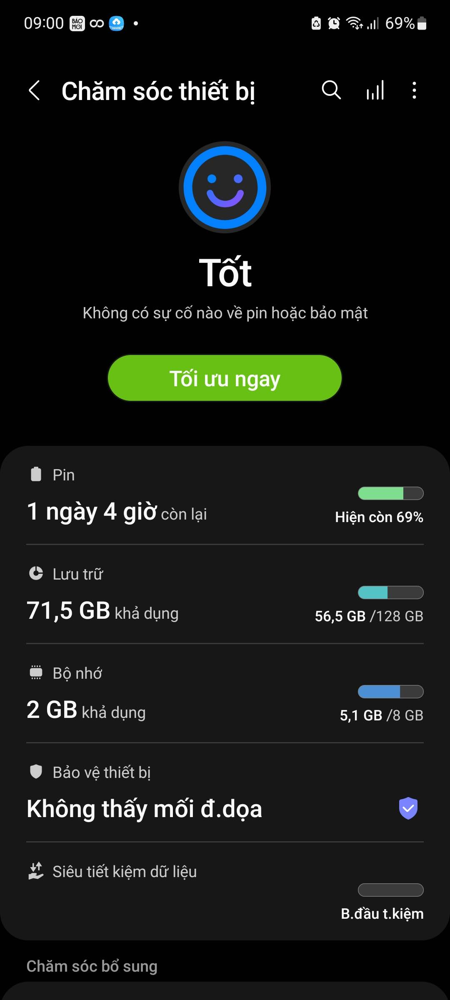
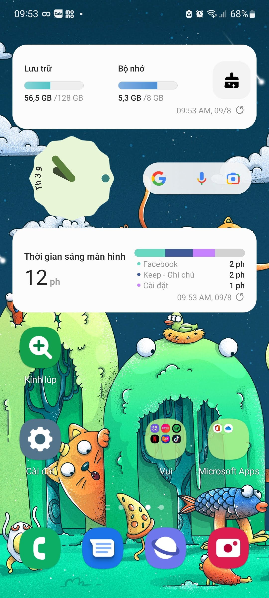
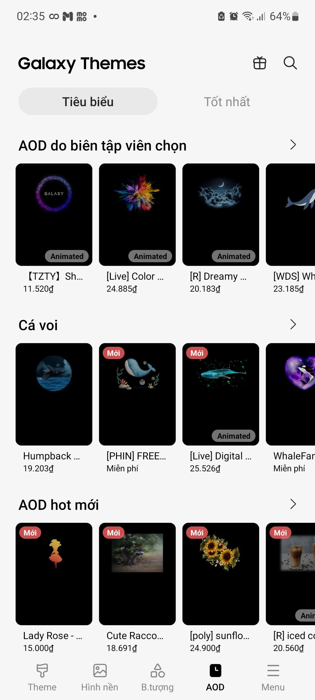
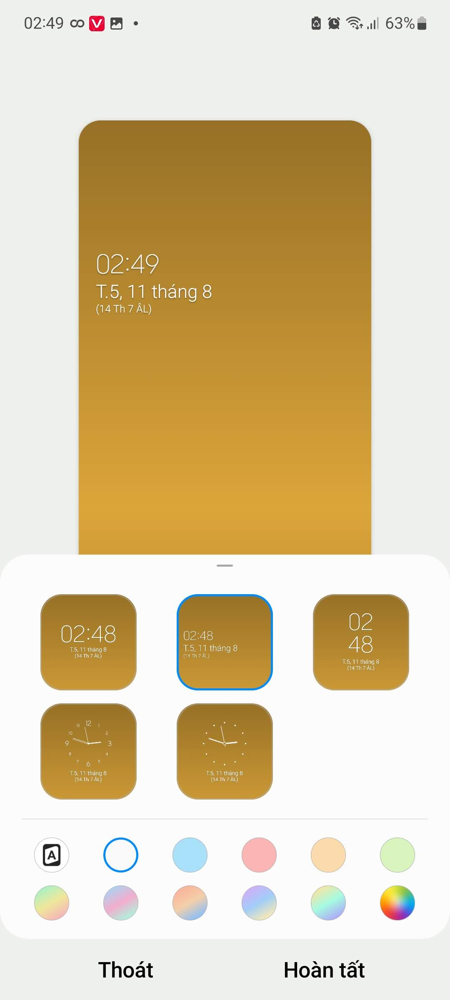
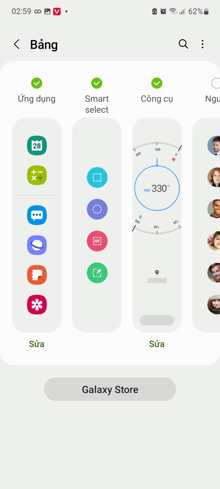
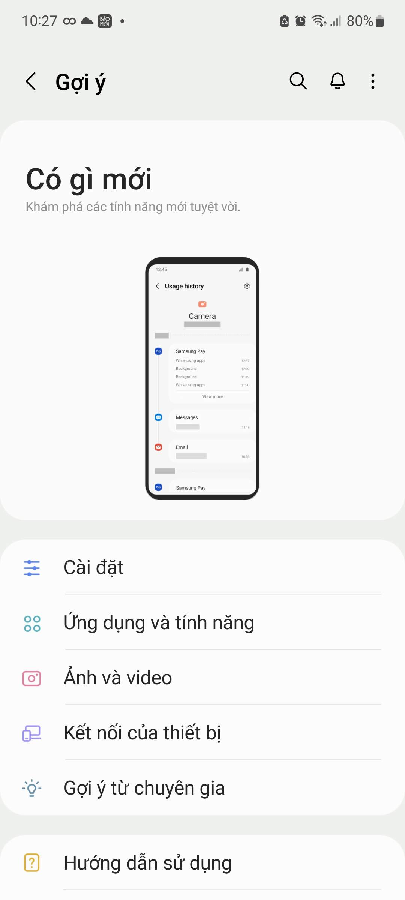
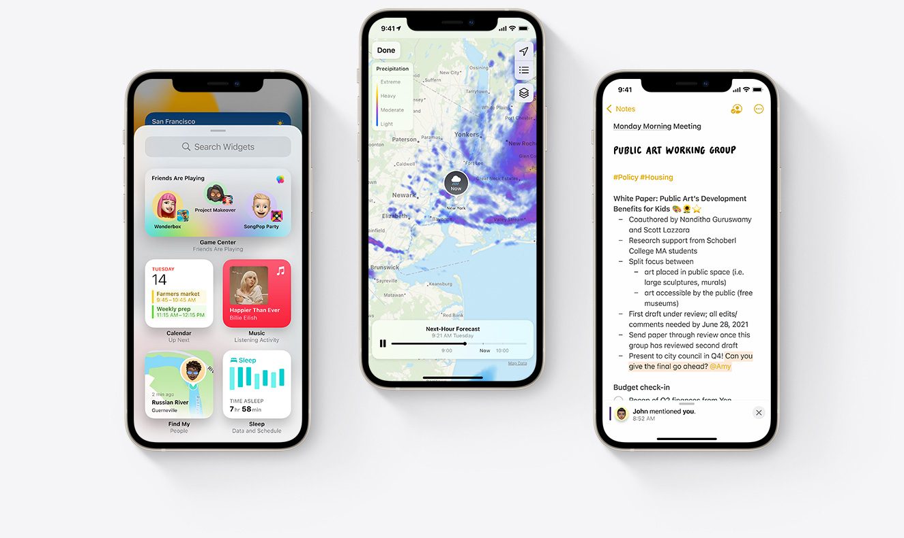
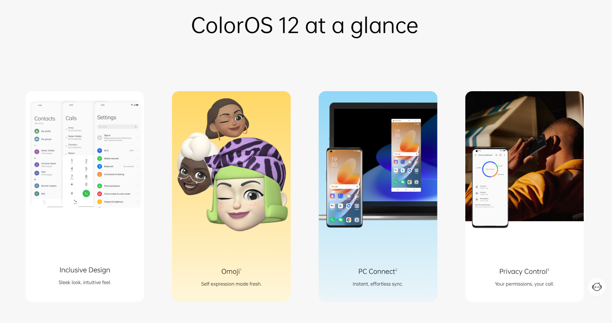

Khám phá giao diện One UI!
Được thiết kế để mang lại ấn tượng bo tròn tinh tế và trọn vẹn, màu sắc sống động, mọi thứ đều gọn, khoảng cách giữa các thành phần được tinh chỉnh cho thể hiện nội dung hợp lí nhất
Hiện đại song song cổ điển
Menu ứng dụng là sự quen thuộc với người dùng Samsung từ trước đến nay, dù là giao diện mới nhất Samsung vẫn làm hài lòng tất cả người dùng bởi có cả chế độ chỉ Màn hình chờ (đa số các điện thoại hiện nay đều dùng) và Màn hình chờ và Màn hình ứng dụng (một điểm rất riêng nhưng không thừa ở điện thoại Samsung). Với sự lựa chọn thứ hai, sự ngăn nắp và gọn được thể hiện một cách rõ ràng, không bị rối khi toàn bộ ứng dụng không cần thiết hiện ở Màn hình chờ

Làm mờ tuyệt đẹp

Chủ thể luôn được làm nổi bật rõ ràng lên trên nền bên dưới được làm mờ một cách thích mắt, mọi thứ tùy chỉnh đều được sắp xếp gọn bên cạnh dưới để dễ thao tác nhất chỉ với một tay. Ở giữa là trung tâm hiển thị nội dung được làm lớn để dễ nhìn và thu hút sự cảm nhận. Phía trên là biểu tượng icon trực quan và đơn giản. Tổng hợp lại ta được một giao diện với bố cục rõ ràng, thân thiện và dễ sử dụng đối với người dùng, tạo cảm giác thoải mái, thích thú và hấp dẫn
Chăm sóc thiết bị

Với Samsung ở chăm sóc thiết bị có một biểu tượng cảm xúc lớn ở phía trên để người dùng dễ dàng nhận biết trạng thái thiết bị chỉ bằng một cái nhìn lướt qua, đồng thời tạo cảm giác gần gũi, sinh động. Tất cả mọi thứ bạn quan tâm đều được hiển thị to ở bên ngoài với bốn mục chính là Pin, Lưu trữ, Bộ nhớ và Bảo vệ thiết bị. Ngoài ra còn có các chăm sóc bổ sung như cập nhật phần mềm và chẩn đoán. Samsung còn tích hợp chế độ tự động tối ưu hàng ngày, tự động khởi động máy, tự động quét phần mềm độc hại để đảm bào người dùng không cần quá quan tâm về việc dọn rác mà thiết bị vẫn luôn ổn định
Widget đa dạng

Dễ dàng trang trí màn hình chờ với nhiều widget hơn kết hợp giữa Samsung và Google. Mỗi widget lại có nhiều kiểu và kích thước khác nhau tha hồ tùy chỉnh sao cho đẹp mắt. Thông tin vắn tắt nhưng đầy đủ được thiết vào vào widget một cách rõ ràng dễ nhìn. Hơn thế nữa ta có thể thực hiện một tác vụ cụ thể với từng widget mà không cần vào bên trong ứng dụng. Để thêm widget ta có thể nhấn giữ vào màn hình chờ hoặc cách hay hơn là nhấn giữ vào ứng dụng mà ta muốn thêm widget.
Samsung Galaxy Theme

Thoải mái tùy biến thiết bị của mình với rất nhiều chủ đề xinh đẹp có sẵn, những hình nền màu sắc tuyệt vời, các biểu tượng ứng dụng ngộ nghĩnh, tinh tế, còn có cả những hình ảnh thiết kế riêng cho màn hình luôn luôn bật, tất cả tạo nên một sự đa dạng đáp ứng được từng sở thích riêng của người dùng. Các thành phần được phân chia theo tiêu đề thông minh giúp người dùng dễ đưa ra lựa chọn.
Kiểu đồng hồ Samsung

Tô điểm cho thiết bị từ cái nhìn đầu tiên ngay khi mở chiếc điện thoại lên, có cả đồng hồ điện tử và đồng hồ kim, tha hồ lựa chọn các màu sắc cho chữ còn có các màu radien rực rỡ
Samsung bảng ở cạnh

Được thiết kế để đa nhiệm tuyệt vời hơn thao tác dễ dàng hơn, từ mở ứng dụng mới, chụp ảnh màn hình có lựa chọn, các công cụ như la bàn, thước, đèn pin, có thể tùy biến nhiều bảng hơn ở Samsung Galaxy Store. Có thể thêm các liên hệ danh bạ, được bo tròn bốn góc rất đẹp. Cảm giác như sử dụng một màn hình phụ tăng trải nghiệm khi dùng, thực hiện được nhiều thứ hơn. Bảng không quá lớn tạo cảm giác thoải mái và thích thú khi sử dụng, mọi thứ đều được sắp xếp gọn gàng và tiện lợi
Các mẹo từ Samsung
Khám phá các tính năng mới sau mỗi lần cập nhật phiên bản Android mới, xem các mẹo để sử dụng hết các tính năng của điện thoại, biết được các mẹo hữu ích từ cài đặt, ứng dụng và tính năng, ảnh và video đến kết nối của thiết bị. Qua đây người dùng hiểu rõ hơn tính hữu dụng của các chức năng hoặc biết thêm các tính năng hay mà chưa để ý đến. Đồng thời còn có gợi ý từ chuyên gia để biết cách sử dụng các tính năng nâng cao hơn chẳng hạn như Bixby Routines. Ứng dụng này giúp người dùng hiểu sâu hơn khả năng mà điện thoại có thể cung cấp được.
Mua điện thoại Samsung chính hãng ở

iOS
Truy cập trang chính thức tại đây

Xinh đẹp, gọn gàng, thông minh là những gì iOS thể hiện và còn hơn thế nữa. Đó là nhận dạng khuôn mặt ngay cả khi đeo khẩu trang, chia sẻ nhiều hơn thông qua SharePlay trong FaceTime, âm thanh không gian, chế độ micro tập trung vào những âm thanh bạn muốn, gọi FaceTime cả trên web với Windows và Android, nhiều Memoji thú vị, tóm tắt thông báo cho bạn một cái nhìn tổng quan ngay ở màn hình khóa, bản đồ được thể hiện thông qua nhiều chi tiết hơn, giờ đây thanh tab của Safari được chuyển xuống dưới cùng giúp bạn dễ dàng thao tác bằng một tay, được bảo vệ nhiều hơn qua các tính năng bảo mật thiết thực
Android gốc
Truy cập trang chính thức tại đây
Thiết kế mới phá bỏ giới hạn

Đậm nét riêng, cá nhân hóa được nâng lên một tầm cao mới với màu sắc được tùy chỉnh đồng bộ theo ý người dùng, bố cục hiện thị gọn gàng và thoải mái, các nút lớn hơn tròn hơn và dễ thao tác hơn, các widget được bo tròn với nhiều hình dạng khác nhau làm cho màn hình chính trở nên như một bức tranh sống động. Chuyển động mượt mà, thích mắt và thu hút nhiều hơn
ColorOS
Truy cập trang chính thức tại đây

Giao diện được thiết kế tối giản đến từng chi tiết tạo nên sự mượt mà, cảm giác trực quan, mang lại cảm giác hoàn hảo cho mỗi thao tác chạm, đồng thời tuy đơn giản nhưng đem lại tính thẩm mỹ tuyệt đối, tập trung vào chính nội dung bạn quan tâm, các biểu tượng ứng dụng được thiết kế 3D nổi bật, thỏa sức tùy chỉnh ở màn hình chờ, tích hợp tính năng kết nối với PC để thực hiện liền mạch và đồng bộ giữ nhiều thiết bị, trình quản lý tác vụ thông minh tự động tối ưu hóa thiết bị giúp người dùng tận hưởng độ mượt mà của điện thoại